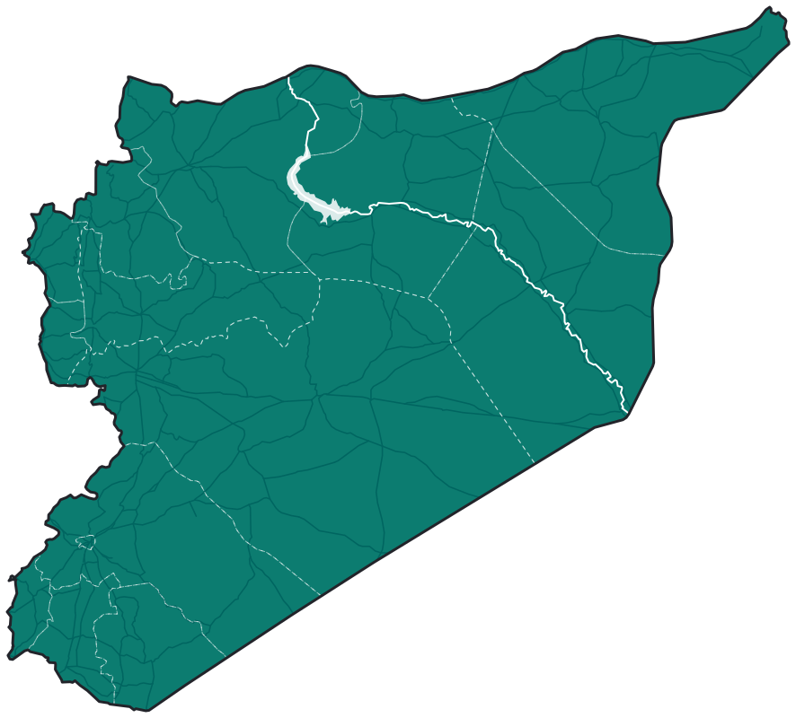
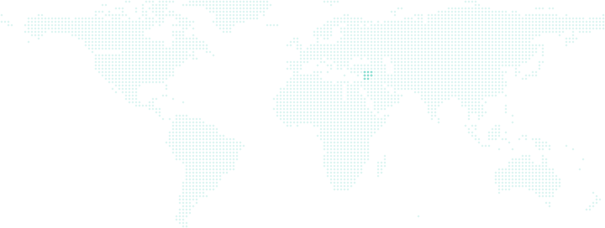

انضم إلينا
نرسم خريطة
نرسم خريطة
سوريا معاً
مجتمع OSM سوريا (OpenStreetMap سوريا): مجتمع تطوعي للخرائط المفتوحة في سوريا، مبني حول OpenStreetMap.

الخرائط الدقيقة المفتوحة المصدر ليست رفاهية. إنها بنية تحتية.
مجتمع OSM سوريا موجود لسد هذه الفجوة — من الداخل، بسواعد سوريين، من أجل الجميع.
ماذا
رسم المباني والطرق وكل التفاصيل الجغرافية الأخرى من الصور ومصادر أخرى على خرائط OpenStreetMap.
لماذا
بيانات أفضل تعني استجابة إنسانية أسرع، وطرقاً أكثر أماناً، وتخطيطاً أقوى لإعادة الإعمار والتنمية.
من
أي شخص مُحب للخرائط والتقنيات المرتبطة بها، لا داعي لمعرفة مسبقة.
التاريخ والوقتدائماً
المكانسوريا / أونلاين
التكلفةمجاناً
أهداف المجتمع
-
1
المساهمة في بناء وصيانة خرائط سوريا مفتوحة المصدر التي تدعم الاستجابة الإنسانية، والتواصل، والتخطيط العمراني، ومشاركة البيانات الجغرافية.
-
2
توسيع الشبكة الاجتماعية للمهتمين بالخرائط والجغرافيا والتقنيات المفتوحة داخل سوريا وفي الشتات.
-
3
تنظيم أنشطة تطوعية ودورات تدريبية مجانية في مجال الخرائط والتقنيات الجغرافية المكانية — لرفع مهارات المشاركين والمجتمع ككل.
مجتمعنا حول العالم
مساهمون من داخل سوريا ومن الشتات يرسمون خريطة واحدة.

مساهمون · الرقم عددهم
اسحب للتحريك · انقر مرتين أو على نقطة للتكبير
101موقعاً على خريطة المجتمع
19دولة
58%داخل سوريا
المواقع مجمّعة في مناطق تقريبية حفاظاً على خصوصية الأعضاء. المصدر: خريطة المجتمع على uMap.
حسب الدولة
ومساهم واحد في كل من: السويد، إندونيسيا، الإمارات، المملكة المتحدة، كندا، النمسا، بلجيكا، مصر، أيرلندا، نيجيريا، لبنان، إيطاليا، اليابان.
داخل سوريا حسب المحافظة
ومساهم واحد في كل من: دير الزور، الحسكة، طرطوس.

أسئلة شائعة
هل أحتاج إلى خبرة سابقة؟
لا. تبدأ الماباثونات عادةً بشرح كيفية إنشاء حساب على OpenStreetMap، ثم نرسم معاً ضمن مشاريع حقيقية.
هل المشاركة مجانية؟
نعم. المجتمع تطوعي، والتدريب والأنشطة مجانية.
بأي لغة تجري الأنشطة؟
معظمها بالعربية، وبعض الجلسات بالإنجليزية أو مع ترجمة فورية.
فاتني نشاط، هل يوجد تسجيل؟
معظم الجلسات الأونلاين مسجّلة على يوتيوب، وروابطها في مستند المجتمع العام.